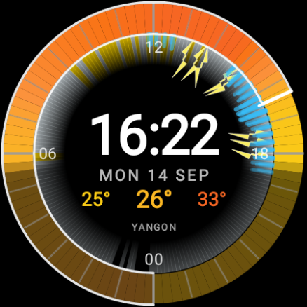
Yangon · Thunder
Heat on the rim, bolts when thunder is in the forecast.
Wear OS · round display
A 24-hour forecast ring for round Wear OS watches. Tune the face and always-on from the phone. GPS is optional.
Requires a Wear OS watch with a round display.
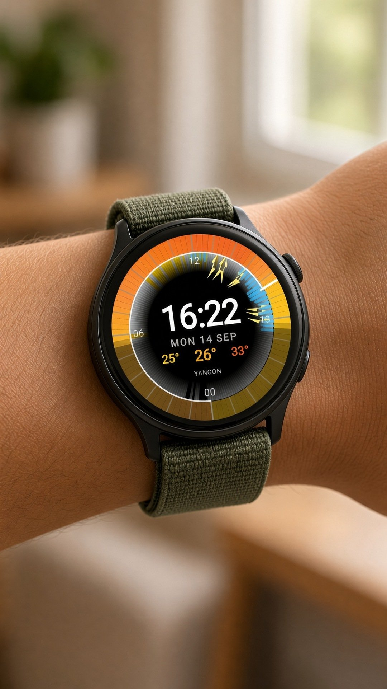
Around the clock
Colour is temperature. The hand is now. Lincoln’s swing, Cairo’s heat, Ushuaia’s snow — the same day, read in one glance.

Yangon · Thunder
Heat on the rim, bolts when thunder is in the forecast.
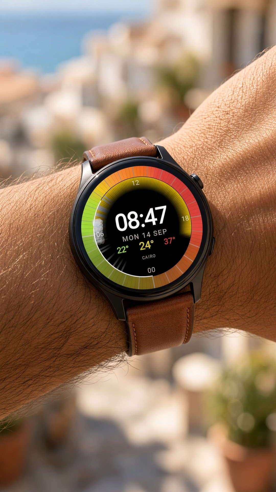
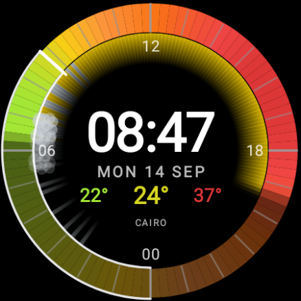
Cairo · Heat
A hot morning: cool dawn, then orange and red through the day.
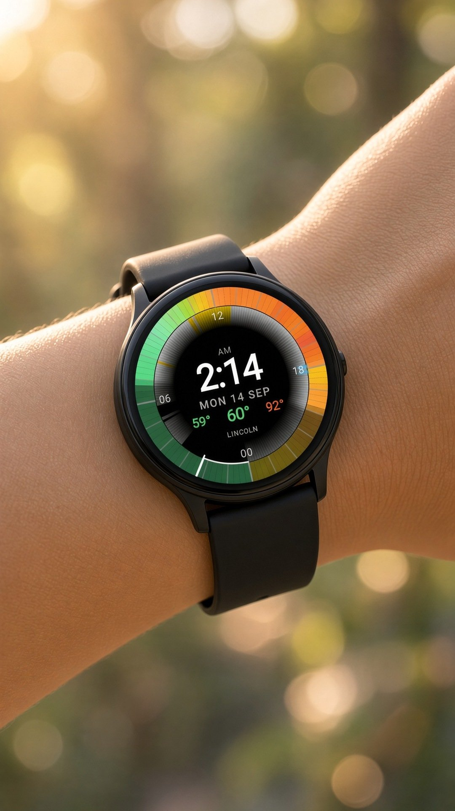
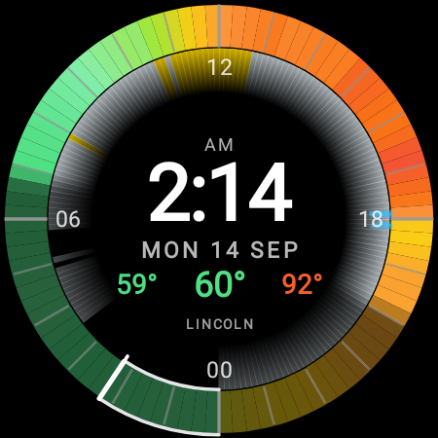
Lincoln · Daily swing
A wide °F day — cool night, then a climb toward red.
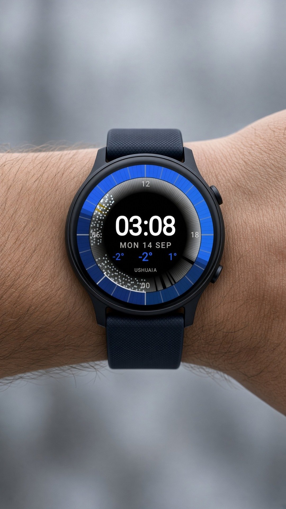
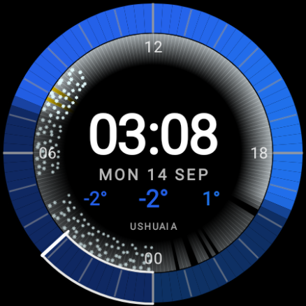
Ushuaia · Snow
Cold blue hours with soft white ticks of snow.
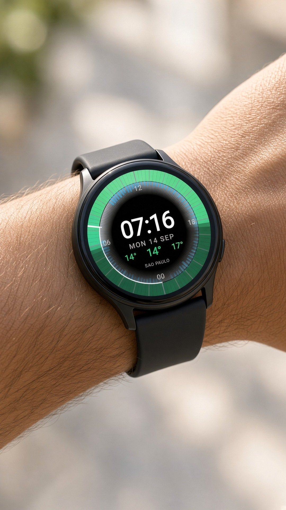
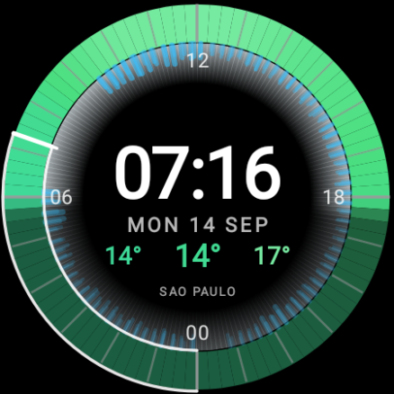
São Paulo · Rain
Streaks on the hour. Longer means more rain.
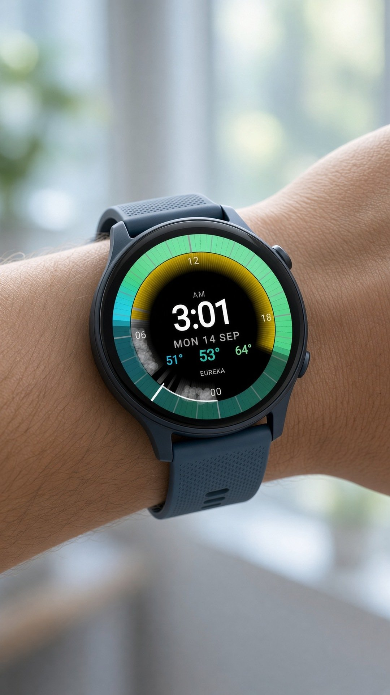
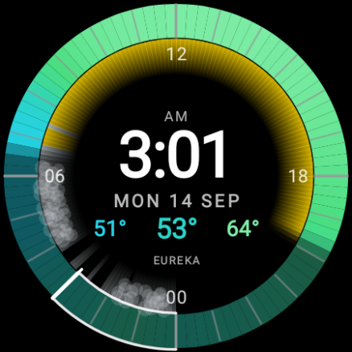
Eureka · Fog
Night veil, a yellow sky glow, and a milky fog band.
Look
The phone and the watch use the same painter. Marks, colours, ring, center chrome, strokes, sky, precipitation, display, and always-on — then save, restore, or reset.
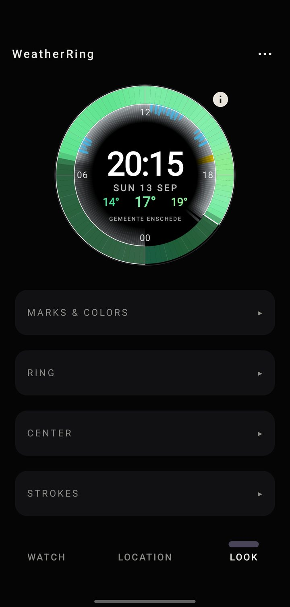
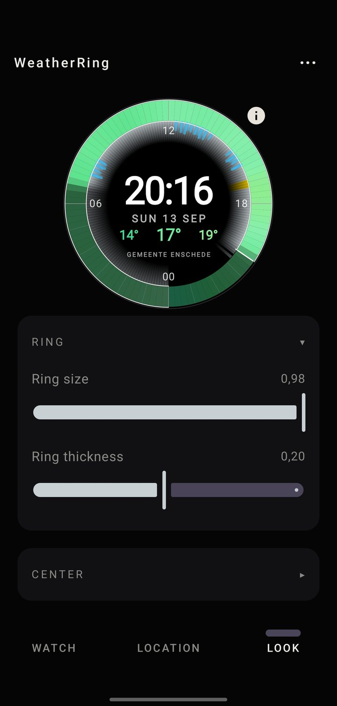
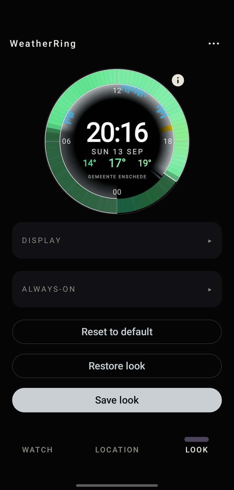
Unlocked AOD only. The interactive face ignores these. Toggle temperature ring, sky glow, precipitation, time, date, temps, and city independently.
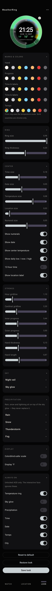
The ring
Midnight → midnight. Colour is temperature. The hand is now. Rain, snow, thunder, fog, night veil, and sky glow sit as layers on top.
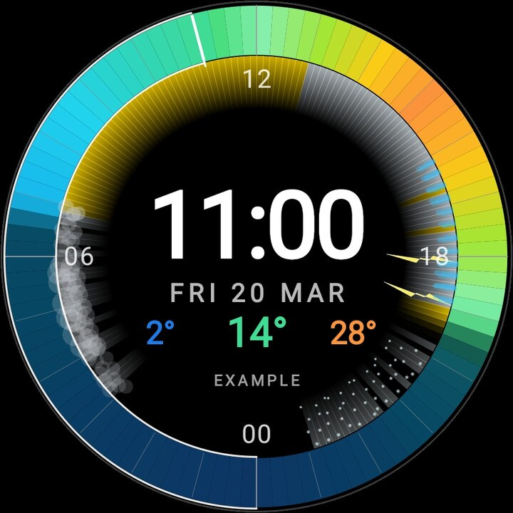
Example — not your city.
Midnight → midnight. Colour is temperature. The hand is now.
Low / now / high are the three numbers. 00 06 12 18 are clock hours.
Location
Search a city. Use my location is one-shot. Hourly follow is a separate switch, off by default. A saved city never uses background GPS.
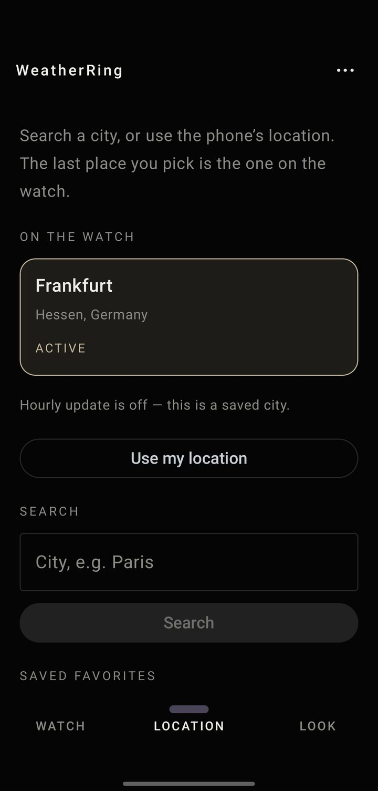
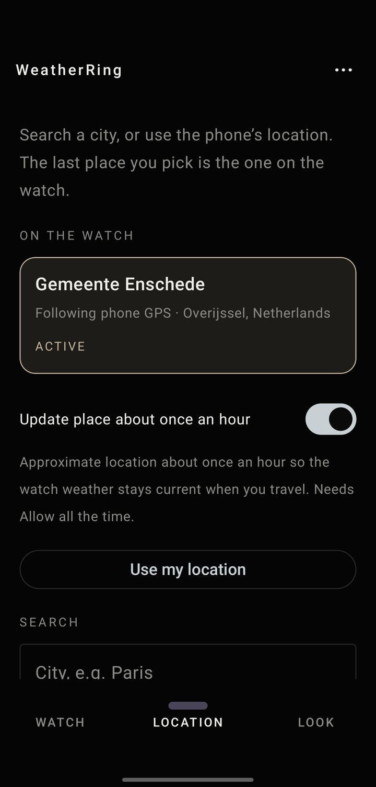
Companion
One purchase, two installs. The phone fetches weather and paints the same ring you wear.
Step 1
Install WeatherRing on Android. That purchase covers the watch.
Step 2
Same app, not a second purchase. Open Install on watch from the companion, or install from the store on the watch.
Step 3
Open WeatherRing once on the watch. On Wear OS 6+ the face can be added after the watch app is installed. On Wear OS 5, add WeatherRing from the picker.
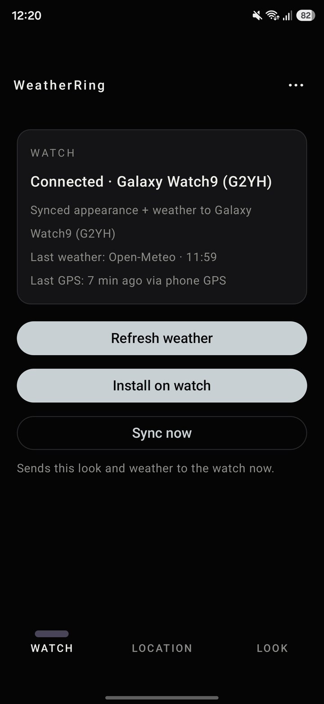
FAQ
Yes. One purchase covers the phone companion and the Wear OS watch app. You still install twice: first on the phone, then the same app on the watch.
No. Search a city. Use my location is a one-shot fix and does not turn on hourly follow. Hourly follow is a separate switch, off by default. A saved city never uses background GPS.
Yes. Open the Look tab — Always-on is a separate group. Unlocked AOD only. The interactive face ignores these. Toggles: temperature ring, sky glow, precipitation, time, date, temps, city.
No. WeatherRing is for round Wear OS watches only. Not rectangular Wear OS. Not Apple Watch.
No account. No ads. We do not sell data. Settings and the day’s forecast stay on the phone and watch.
Get WeatherRing
One purchase covers the phone companion and the Wear OS watch app. The Play Store listing will land here.
Not listed yet. Check back for the Play Store link — no email signup.
Requires a Wear OS watch with a round display.